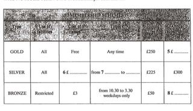
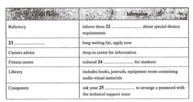
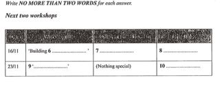
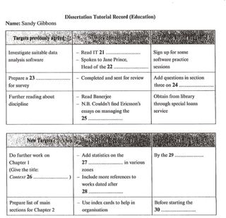
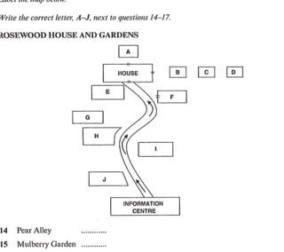
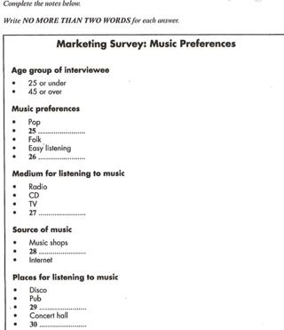
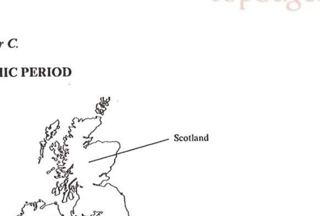

Listening visuals Cambridge 6Reviewed results: 122 confirmed issue records (86 duplicate pairs, 9 sequence inversions, 1 wrong-Part image, 26 clipped images); 23 suspected records. Counts overlap Parts/assets. Full reviewed CSV. Raw audit.json/findings.csv are detector output, not the final defect list. Fallback scope alone is not a defect. OCR ranges are incomplete hints.
All books · Cambridge 6: 16 Parts · exact current resolver outputCambridge 06 / Test 1 / Part 1
V0065:confirmed:duplicate_content; C006:suspected:crop_edge_risk
Q[1, 4]: 1, 2, 3 [Part fallback]
Q[5, 8]: 1, 2, 3
Q[9, 10]: 1, 2, 3 [Part fallback]
 #1 OCR Q[[1, 10], [1, 4]] · 975×1290
#1 OCR Q[[1, 10], [1, 4]] · 975×1290
Test_1_Section_1_PDF_Page_011.jpg
assets/public/7d4a9ac26a921bff190733982eed754af7342f87429a4e89ad94b14336d726ff.jpg
asset-7d4a9ac26a921bff190733982eed754af7342f87429a4e89ad94b14336d726ff #2 OCR Q[[5, 8]] · 975×1290
#2 OCR Q[[5, 8]] · 975×1290
Test_1_Section_1_PDF_Page_012.jpg
assets/public/151efc63b36d2e2ddc5d0317ed50c5dd81841931e8b51957686a1469418a0371.jpg
asset-151efc63b36d2e2ddc5d0317ed50c5dd81841931e8b51957686a1469418a0371
#3 OCR Q[] · 1053×606
Test_1_Section_1_MEMBERSHIP_SCHEMES_TABLE.jpg
assets/public/068423ff9de3e5b4fecf18d136c02ea752d65589cf78655664fa6c6988e55fa4.jpg
asset-068423ff9de3e5b4fecf18d136c02ea752d65589cf78655664fa6c6988e55fa4Cambridge 06 / Test 1 / Part 2
V0068:confirmed:duplicate_content; C024:confirmed:clipped_source
Q[11, 16]: 1, 2, 3 [Part fallback]
Q[17, 20]: 1, 2, 3
 #1 OCR Q[[11, 20], [11, 16], [11, 16]] · 975×1290
#1 OCR Q[[11, 20], [11, 16], [11, 16]] · 975×1290
Test_1_Section_2_PDF_Page_013.jpg
assets/public/d0ac2f4c3d16d17a4398ba1935acd15dc5315d25ed67ef6cf3a34604c7a7a933.jpg
asset-d0ac2f4c3d16d17a4398ba1935acd15dc5315d25ed67ef6cf3a34604c7a7a933 #2 OCR Q[[17, 20]] · 975×1290
#2 OCR Q[[17, 20]] · 975×1290
Test_1_Section_2_PDF_Page_014.jpg
assets/public/37fb8b707fd13756db402eb492cdd5df9304a713a49ed705f5f7ef4722cf58ad.jpg
asset-37fb8b707fd13756db402eb492cdd5df9304a713a49ed705f5f7ef4722cf58ad#3 OCR Q[] · 1091×524
Test_1_Section_2_ROYAL_HUNT_TICKETS_TABLE.jpg
assets/public/88fb8c0c0b2903a4bc6af16f8aac1bcb60c12bb1dea075be5462b294e049954f.jpg
asset-88fb8c0c0b2903a4bc6af16f8aac1bcb60c12bb1dea075be5462b294e049954fCambridge 06 / Test 1 / Part 3
V0070:confirmed:duplicate_content
Q[21, 21]: 1, 2, 3 [Part fallback]
Q[22, 25]: 1, 2, 3
Q[26, 30]: 1, 2, 3 [Part fallback]
 #1 OCR Q[[21, 30], [22, 25]] · 975×1290
#1 OCR Q[[21, 30], [22, 25]] · 975×1290
Test_1_Section_3_PDF_Page_015.jpg
assets/public/bc14460407ac8edcc5325334996a802129272ebda6ffbcc53f12bee59acf9292.jpg
asset-bc14460407ac8edcc5325334996a802129272ebda6ffbcc53f12bee59acf9292 #2 OCR Q[[26, 30]] · 975×1290
#2 OCR Q[[26, 30]] · 975×1290
Test_1_Section_3_PDF_Page_016.jpg
assets/public/1eb4551e4cb970d5ff3885ef4a274cbe3c622c7588c84a8da43f0e00e105107d.jpg
asset-1eb4551e4cb970d5ff3885ef4a274cbe3c622c7588c84a8da43f0e00e105107d
#3 OCR Q[] · 1078×573
Test_1_Section_3_COLLEGE_FACILITIES_TABLE.jpg
assets/public/ecb2d3aad7b6e0214cd803c94710ea155c2649e1c3cab4f507963028a3f55a86.jpg
asset-ecb2d3aad7b6e0214cd803c94710ea155c2649e1c3cab4f507963028a3f55a86Cambridge 06 / Test 1 / Part 4
V0073:confirmed:duplicate_content
Q[31, 37]: 1, 2, 3
Q[38, 40]: 1, 2, 3 [Part fallback]
 #1 OCR Q[[31, 40], [31, 37]] · 975×1290
#1 OCR Q[[31, 40], [31, 37]] · 975×1290
Test_1_Section_4_PDF_Page_017.jpg
assets/public/9789f09ec602ee1b5f367a5bfc21804cb0e7a0d51dbbd0a0cf2bdc98087da4b0.jpg
asset-9789f09ec602ee1b5f367a5bfc21804cb0e7a0d51dbbd0a0cf2bdc98087da4b0 #2 OCR Q[[38, 40]] · 975×1290
#2 OCR Q[[38, 40]] · 975×1290
Test_1_Section_4_PDF_Page_018.jpg
assets/public/4b954f0dc7810094931966865150fbca8294dcf200f8d00cc04a7859d3bb7a4d.jpg
asset-4b954f0dc7810094931966865150fbca8294dcf200f8d00cc04a7859d3bb7a4d#3 OCR Q[] · 1103×1016
Test_1_Section_4_EAST_END_HISTORY_TABLE.jpg
assets/public/8004d32eb04e271ca5bef23e38cc255e0a87814a1f9500173521fe3d2dd5f0ad.jpg
asset-8004d32eb04e271ca5bef23e38cc255e0a87814a1f9500173521fe3d2dd5f0adCambridge 06 / Test 2 / Part 1
No confirmed/candidate defect detected; not a visual PASS
Q[1, 5]: 1, 2, 3 [Part fallback]
Q[6, 10]: 1, 2, 3
 #1 OCR Q[[1, 10], [1, 5]] · 975×1290
#1 OCR Q[[1, 10], [1, 5]] · 975×1290
Test_2_Section_1_PDF_Page_034.jpg
assets/public/f3b18bdf58d5a232baaca6da50d1a7d3ce4c3cc9bd120281d7f4ea8d239ad99b.jpg
asset-f3b18bdf58d5a232baaca6da50d1a7d3ce4c3cc9bd120281d7f4ea8d239ad99b
#2 OCR Q[] · 1091×442
Test_2_Section_1_NEXT_TWO_WORKSHOPS_TABLE.jpg
assets/public/0075ce268b655f24eff649b8554f34f35cbfb4529625446e31215c6057361fe9.jpg
asset-0075ce268b655f24eff649b8554f34f35cbfb4529625446e31215c6057361fe9 #3 OCR Q[[6, 10]] · 1192×1684
#3 OCR Q[[6, 10]] · 1192×1684
cambridge-06-test-02-part-1.png
assets/public/1ab319d4dff1ce6fcde22c5f6db4d3c9d12456f57018a54229f374081146e03a.png
asset-1ab319d4dff1ce6fcde22c5f6db4d3c9d12456f57018a54229f374081146e03aCambridge 06 / Test 2 / Part 2
V0076:confirmed:duplicate_content; V0077:confirmed:order_inversion
Q[11, 14]: 1, 2, 3 [Part fallback]
Q[15, 17]: 1, 2, 3
Q[18, 20]: 1, 2, 3 [Part fallback]
 #1 OCR Q[[11, 20], [11, 14], [15, 17]] · 975×1290
#1 OCR Q[[11, 20], [11, 14], [15, 17]] · 975×1290
Test_2_Section_2_PDF_Page_036.jpg
assets/public/7a6bd325e3f99857c030c99087ca00a392cb8dd36a8c783745d66950fe01295f.jpg
asset-7a6bd325e3f99857c030c99087ca00a392cb8dd36a8c783745d66950fe01295f #2 OCR Q[[18, 20]] · 975×1290
#2 OCR Q[[18, 20]] · 975×1290
Test_2_Section_2_PDF_Page_037.jpg
assets/public/9bb29f544292bdb5ac91b62099d22473f9893a3597c349074e9a26ddb0c6e5f4.jpg
asset-9bb29f544292bdb5ac91b62099d22473f9893a3597c349074e9a26ddb0c6e5f4#3 OCR Q[[15, 17]] · 1103×770
Test_2_Section_2_TRAIN_TICKET_TYPES_TABLE.jpg
assets/public/77a8624032b2f8a1073bc9d8489dc5dfabbec1965a765fbdfa249527e8547dc2.jpg
asset-77a8624032b2f8a1073bc9d8489dc5dfabbec1965a765fbdfa249527e8547dc2Cambridge 06 / Test 2 / Part 3
V0080:confirmed:duplicate_content
Q[21, 30]: 1, 2
 #1 OCR Q[[21, 30]] · 975×1290
#1 OCR Q[[21, 30]] · 975×1290
Test_2_Section_3_PDF_Page_038.jpg
assets/public/92cc6685a95cf163dbd8cd046012a3f104d37c14d6f0e15ac5cc6f02dc4d3b55.jpg
asset-92cc6685a95cf163dbd8cd046012a3f104d37c14d6f0e15ac5cc6f02dc4d3b55
#2 OCR Q[] · 1103×1065
Test_2_Section_3_DISSERTATION_TUTORIAL_RECORD.jpg
assets/public/232cd5e9677044ed4afcf8705a2cdd7bade93fe4749268e2ea2381d72388b360.jpg
asset-232cd5e9677044ed4afcf8705a2cdd7bade93fe4749268e2ea2381d72388b360Cambridge 06 / Test 2 / Part 4
No confirmed/candidate defect detected; not a visual PASS
Q[31, 37]: 1, 2 [Part fallback]
Q[38, 40]: 1, 2 [Part fallback]
 #1 OCR Q[[31, 40], [31, 37]] · 975×1290
#1 OCR Q[[31, 40], [31, 37]] · 975×1290
Test_2_Section_4_PDF_Page_039.jpg
assets/public/aaa49ae52d4c5dd92be5633532ae2517d9cf4d55dbccc7ccf1492d29241a8815.jpg
asset-aaa49ae52d4c5dd92be5633532ae2517d9cf4d55dbccc7ccf1492d29241a8815 #2 OCR Q[[38, 40]] · 975×1290
#2 OCR Q[[38, 40]] · 975×1290
Test_2_Section_4_PDF_Page_040.jpg
assets/public/750ec18314f8574ceb29439770252d5c7d8b39eda1bc56d8d9a7dea8c9792b6b.jpg
asset-750ec18314f8574ceb29439770252d5c7d8b39eda1bc56d8d9a7dea8c9792b6bCambridge 06 / Test 3 / Part 1
V0083:confirmed:duplicate_content; C038:confirmed:clipped_source
Q[1, 10]: 1, 2, 3
 #1 OCR Q[[1, 10]] · 975×1290
#1 OCR Q[[1, 10]] · 975×1290
Test_3_Section_1_PDF_Page_056.jpg
assets/public/149d9ba1a13604a02a9a7ecf979aa224a4b6028140e79f0626e04579561e640d.jpg
asset-149d9ba1a13604a02a9a7ecf979aa224a4b6028140e79f0626e04579561e640d #2 OCR Q[] · 975×1290
#2 OCR Q[] · 975×1290
Test_3_Section_1_PDF_Page_057.jpg
assets/public/ab264991c46e896229699ac95bf5fc0cb6a40fcbef092b74798b8bab53016dbe.jpg
asset-ab264991c46e896229699ac95bf5fc0cb6a40fcbef092b74798b8bab53016dbe#3 OCR Q[] · 1078×1048
Test_3_Section_1_OPENING_A_BANK_ACCOUNT_FORM.jpg
assets/public/8e61242c8c5c2490327fa8bd2c2d72c7b1e7a91bb5a80f38bb142323cd8fc1c6.jpg
asset-8e61242c8c5c2490327fa8bd2c2d72c7b1e7a91bb5a80f38bb142323cd8fc1c6Cambridge 06 / Test 3 / Part 2
V0084:confirmed:duplicate_content; C033:confirmed:clipped_source
Q[11, 13]: 1, 2, 3 [Part fallback]
Q[14, 17]: 1, 2, 3
Q[18, 20]: 1, 2, 3 [Part fallback]
 #1 OCR Q[[11, 20], [11, 13]] · 975×1290
#1 OCR Q[[11, 20], [11, 13]] · 975×1290
Test_3_Section_2_PDF_Page_058.jpg
assets/public/e311c0f9b6ab96ae7472b91ce6783e1f514f3699731d14c3697bed8e73941dfa.jpg
asset-e311c0f9b6ab96ae7472b91ce6783e1f514f3699731d14c3697bed8e73941dfa #2 OCR Q[[14, 17], [14, 17], [18, 20]] · 975×1290
#2 OCR Q[[14, 17], [14, 17], [18, 20]] · 975×1290
Test_3_Section_2_PDF_Page_059.jpg
assets/public/466e2e0c2e5b3874455fe5fcf48f05dc44dd3f1eb6c688fba080caf9fa093d17.jpg
asset-466e2e0c2e5b3874455fe5fcf48f05dc44dd3f1eb6c688fba080caf9fa093d17
#3 OCR Q[[14, 17]] · 942×836
Test_3_Section_2_ROSEWOOD_HOUSE_AND_GARDENS_MAP.jpg
assets/public/48c750ef1f981db16c6f8daead8556be5b72e3a1eed102f3ec560640fa149137.jpg
asset-48c750ef1f981db16c6f8daead8556be5b72e3a1eed102f3ec560640fa149137Cambridge 06 / Test 3 / Part 3
V0087:confirmed:duplicate_content; C028:suspected:crop_edge_risk
Q[21, 24]: 1, 2, 3 [Part fallback]
Q[25, 30]: 1, 2, 3 [Part fallback]
 #1 OCR Q[[21, 30], [21, 24]] · 975×1290
#1 OCR Q[[21, 30], [21, 24]] · 975×1290
Test_3_Section_3_PDF_Page_060.jpg
assets/public/395e75b6424d0572230e5992eb94f21ff04aaa5837aa8ea25cbac27628ad0776.jpg
asset-395e75b6424d0572230e5992eb94f21ff04aaa5837aa8ea25cbac27628ad0776 #2 OCR Q[[25, 30]] · 975×1290
#2 OCR Q[[25, 30]] · 975×1290
Test_3_Section_3_PDF_Page_061.jpg
assets/public/a3d806a65c12507c335671bba162d72ddfdd1fd91e0e8b0447cef5dcd1979027.jpg
asset-a3d806a65c12507c335671bba162d72ddfdd1fd91e0e8b0447cef5dcd1979027
#3 OCR Q[] · 1016×1179
Test_3_Section_3_MUSIC_PREFERENCES_NOTES.jpg
assets/public/1940054e57262c151915fc2810d202ec9cbcf855e5c2ed213210368c926de70b.jpg
asset-1940054e57262c151915fc2810d202ec9cbcf855e5c2ed213210368c926de70bCambridge 06 / Test 3 / Part 4
No confirmed/candidate defect detected; not a visual PASS
Q[31, 34]: 1, 2, 3 [Part fallback]
Q[35, 40]: 1, 2, 3 [Part fallback]
 #1 OCR Q[[31, 40], [31, 34]] · 975×1290
#1 OCR Q[[31, 40], [31, 34]] · 975×1290
Test_3_Section_4_PDF_Page_062.jpg
assets/public/74feab8aaa0a830142b767bdc7c88d8408524ff8a33b857415dca002b14ee11b.jpg
asset-74feab8aaa0a830142b767bdc7c88d8408524ff8a33b857415dca002b14ee11b #2 OCR Q[[35, 40]] · 975×1290
#2 OCR Q[[35, 40]] · 975×1290
Test_3_Section_4_PDF_Page_063.jpg
assets/public/0cce2c930e6f20787568f2f2257fa3395a9b66803b358d5e8b415c05d341c50d.jpg
asset-0cce2c930e6f20787568f2f2257fa3395a9b66803b358d5e8b415c05d341c50d
#3 OCR Q[] · 657×443
Test_3_Section_4_IRELAND_SCOTLAND_ENGLAND_MAP.jpg
assets/public/3c0d8ece1c4b04e084ed92decd1a5fa6cea7d3c0ac29249d0846cee8d580c019.jpg
asset-3c0d8ece1c4b04e084ed92decd1a5fa6cea7d3c0ac29249d0846cee8d580c019Cambridge 06 / Test 4 / Part 1
V0092:confirmed:duplicate_content
Q[1, 10]: 1, 2 [Part fallback]
 #1 OCR Q[[1, 10]] · 975×1290
#1 OCR Q[[1, 10]] · 975×1290
Test_4_Section_1_PDF_Page_079.jpg
assets/public/2e8e6e0fae7a9e6db714324219ba2f74f3f2a8d72291d919c6ddab27d2e80fbf.jpg
asset-2e8e6e0fae7a9e6db714324219ba2f74f3f2a8d72291d919c6ddab27d2e80fbf#2 OCR Q[[1, 10]] · 1116×1146
Test_4_Section_1_CONFERENCE_BOOKING_NOTES.jpg
assets/public/48752123a4afac43b3497e4e8951b2a9904d0fe40aa56dfa158b3393fb257a2c.jpg
asset-48752123a4afac43b3497e4e8951b2a9904d0fe40aa56dfa158b3393fb257a2cCambridge 06 / Test 4 / Part 2
V0094:confirmed:duplicate_content
Q[11, 13]: 1, 2, 3 [Part fallback]
Q[14, 20]: 1, 2, 3
 #1 OCR Q[[11, 20], [11, 13], [11, 13]] · 975×1290
#1 OCR Q[[11, 20], [11, 13], [11, 13]] · 975×1290
Test_4_Section_2_PDF_Page_080.jpg
assets/public/a2c418ba82eba241e82054e6c36388ac3815ae6ee61d9366e8b0cd5683758501.jpg
asset-a2c418ba82eba241e82054e6c36388ac3815ae6ee61d9366e8b0cd5683758501 #2 OCR Q[[14, 20]] · 975×1290
#2 OCR Q[[14, 20]] · 975×1290
Test_4_Section_2_PDF_Page_081.jpg
assets/public/77cd449a6cf2ace309feeab7e32376c22f82e0e7f40791906bf076fe3112f6a1.jpg
asset-77cd449a6cf2ace309feeab7e32376c22f82e0e7f40791906bf076fe3112f6a1#3 OCR Q[] · 1103×1082
Test_4_Section_2_TRAVEL_EXPO_ORIENTATION_TABLE.jpg
assets/public/55e416ce77a1d6f0541f67684ad00a08e74198dca00d180a9139dfc5d0e23ccd.jpg
asset-55e416ce77a1d6f0541f67684ad00a08e74198dca00d180a9139dfc5d0e23ccdCambridge 06 / Test 4 / Part 3
V0096:confirmed:duplicate_content; C021:confirmed:clipped_source
Q[21, 25]: 1, 2, 3 [Part fallback]
Q[26, 27]: 1, 2, 3 [Part fallback]
Q[28, 30]: 1, 2, 3 [Part fallback]
 #1 OCR Q[[21, 30], [21, 25]] · 975×1290
#1 OCR Q[[21, 30], [21, 25]] · 975×1290
Test_4_Section_3_PDF_Page_082.jpg
assets/public/b723ab26cf04d9dc32c6db53c62c568294a8c1681a27f0eb667c0f2563e01c9a.jpg
asset-b723ab26cf04d9dc32c6db53c62c568294a8c1681a27f0eb667c0f2563e01c9a #2 OCR Q[[28, 30]] · 975×1290
#2 OCR Q[[28, 30]] · 975×1290
Test_4_Section_3_PDF_Page_083.jpg
assets/public/9d0fc3e969a74a68563925ca319f202c27a2632a2bf206fdad22c1c9592881a6.jpg
asset-9d0fc3e969a74a68563925ca319f202c27a2632a2bf206fdad22c1c9592881a6#3 OCR Q[] · 1078×934
Test_4_Section_3_EDUCATION_LIBRARIES_SUMMARY.jpg
assets/public/f9e7ca07f5e1d38782b3ab4cae1a23eae834574fdb80130b90926321bf6be429.jpg
asset-f9e7ca07f5e1d38782b3ab4cae1a23eae834574fdb80130b90926321bf6be429Cambridge 06 / Test 4 / Part 4
No confirmed/candidate defect detected; not a visual PASS
Q[31, 34]: 1, 2 [Part fallback]
Q[35, 40]: 1, 2 [Part fallback]
 #1 OCR Q[[31, 40], [31, 34]] · 975×1290
#1 OCR Q[[31, 40], [31, 34]] · 975×1290
Test_4_Section_4_PDF_Page_084.jpg
assets/public/47a9009e573ce4e8247fa0eda7e355a4e6bf679d6e49128df96ff1fce03ca3fe.jpg
asset-47a9009e573ce4e8247fa0eda7e355a4e6bf679d6e49128df96ff1fce03ca3fe #2 OCR Q[[35, 40]] · 975×1290
#2 OCR Q[[35, 40]] · 975×1290
Test_4_Section_4_PDF_Page_085.jpg
assets/public/4eab841462527432d0a01741a95478adfc4e9a430c4fc80e16d414d471671a01.jpg
asset-4eab841462527432d0a01741a95478adfc4e9a430c4fc80e16d414d471671a01